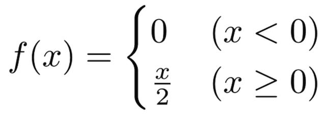
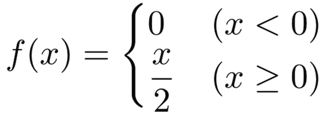

TOC
LaTexで場合分けを記述するための環境についてまとめます。
cases
casesは場合分けを記述するための環境の1つです。
使用するにはamsmathパッケージをインクルードする必要があります。
デフォルトでは\textstyleになっているため、分数などは窮屈に表示されてしまいます。
$$
f(x)=
\begin{cases}
0 & (x < 0) \\
\frac{x}{2} & (x \ge 0)
\end{cases}
$$

\displaystyleを明示的に指定することもできます。
$$
f(x)=
\begin{cases}
0 & (x < 0) \\
\displaystyle \frac{x}{2} & (x \ge 0)
\end{cases}
$$

dcases
一方、dcases環境ではデフォルトで\displaystyleになっています。
わざわざcases環境で\displaystyleを指定するよりも、こちらの環境を使った方が楽です。
使用するにはmathtoolsパッケージをインクルードする必要があります。
cases*
cases環境では左側の値と右側の条件はどちらも\textstyleでしたが、条件のみデフォルトで\textになったcases*という環境もあります。
条件に数式ではなく文章を多く記述する場合に有用です。
同様に、値は\displaystyleで条件が\textであるdcases*という環境もあります。
これらを使用するのに必要となるパッケージはアスタリスク無し環境と同じです。